|
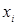 |
1 |
4 |
8 |
|
|
0,3 |
0,1 |
0,6 |
Узлуксиз тасодифий микдорларнинг таксимот ва зичлик функциялари, уларнинг хоссалари
Дискрет тасодифий микдор унинг барча мумкин бўлган кийматлари ва уларнинг эхтимолликлари рўйхати билан берилиши мумкин. Бирок бу усулни узлуксиз тасодифий микдорлар учун кўллаб бўлмайди.
Масалан, мумкин бўлган
кийматлари 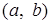
х хакикий сон бўлсин. Х нинг х дан
кичик киймат кабул килишидан иборат 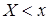 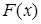
Х тасодифий микдорнинг таксимот функцияси деб тажриба натижасида Х тасодифий микдор х дан кичик кийматни кабул килишининг эхтимоллигини аникловчи функцияга айтилади, яъни
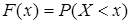
Бу тенгликни геометрик нуктаи назардан бундай талкин килиш мумкин: — сон ўкида х нуктадан чапда ётувчи нукта билан тасвирланадиган кийматни тасодифий микдор кабул килишининг эхтимоллиги.
Таксимот функциясининг хоссаларини кўриб чикайлик.
1-хосса. Таксимот функциясининг кийматлари 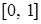
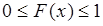
Исбот. Бу хосса таксимот функциясининг эхтимоллик сифатида таърифланишидан келиб чикади: эхтимоллик доимо 1 дан катта бўлмаган номанфий сондир.
2-хосса. —камаймайдиган функция, яъни:
агар
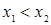 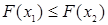
1-натижа. Тасодифий микдорнинг интервалда ётувчи кийматни кабул килиш эхтимоллиги таксимот функциясининг шу интервалдаги орттирмасига тенг:
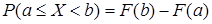
1-мисол. Х тасодифий микдор куйидаги таксимот функцияси билан берилган:
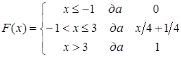
Тажриба натижасида Х
тасодифий
микдор 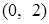
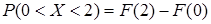
Ечиш. Шартга кўра интервалда 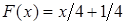 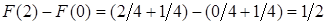
Демак, 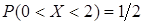
2-натижа. Х узлуксиз тасодифий микдорнинг аник бир кийматни кабул килишининг эхтимоллиги нолга тенг.
3-хосса. Агар тасодифий
микдорнинг мумкин бўлган кийматлари интервалга тегишли бўлса, у холда: 1) 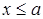 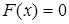 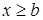 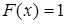
Исбот. 1) 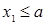 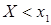 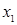
2) 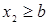 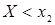 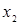
3-натижа. Агар узлуксиз тасодифий микдорнинг мумкин бўлган кийматлари бутун х сонлар ўкида жойлашган бўлса, у холда куйидаги лимит муносабатлар ўринли:
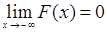 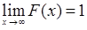
Узлуксиз тасодифий
микдор таксимот функциясининг графиги 1-хоссага асосан 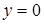 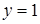
2-хоссадан шу нарса келиб чикадики, тасодифий микдорнинг мумкин бўлган барча кийматлари жойлашган интервалда х ўзгарувчи ўсганда, график ё юкорига кия, ё горизонтал кўринишда бўлади.
3-хоссага асосан да графикнинг ординаталари нолга тенг; да эса графикнинг ординаталари бирга тенг.
Узлуксиз тасодифий микдор таксимот функциясининг графиги 7.1-расмда жойлашган.
| ||||||||||||||
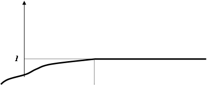 | ||||||||||||||
| ||||||||||||||
|
|
| ||||||||||||
7. 1- расм.
2-мисол. Х дискрет тасодифий микдор куйидаги таксимот конуни билан берилган:
7.1-жадвал
|
 |
1 |
4 |
8 |
|
|
0,3 |
0,1 |
0,6 |
Таксимот функцияси топилсин ва унинг графиги чизилсин.
Ечиш. Агар 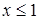
Агар 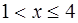 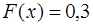
Агар 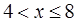 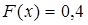 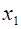 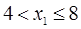 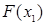
Агар 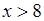 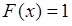
Шундай килиб, таксимот функцияси аналитик кўринишда куйидагича ёзилиши мумкин:
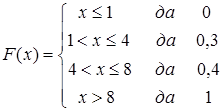
Бу функциянинг графиги 7.2-расмда келтирилган.
| |||
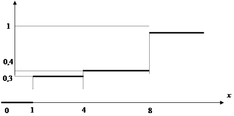 | |||
7.2-расм.
Узлуксиз тасодифий микдорни зичлик функцияси деб ата-лувчи бошка функциядан фойдаланган холда хам бериш мумкин.
Х узлуксиз
тасодифий
микдорнинг зичлик функцияси деб  функцияга — таксимот функциясидан олинган би-ринчи тартибли хосилага
айтилади:
функцияга — таксимот функциясидан олинган би-ринчи тартибли хосилага
айтилади:
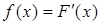
Бу ердан таксимот функцияси зичлик функцияси учун бошлангич функция эканлиги келиб чикади. Дискрет тасодифий микдорнинг эхтимолликлари таксимотини тасвирлаш учун зичлик функциясидан фойдаланиб бўлмайди.
Зичлик функциясини билган холда, узлуксиз тасодифий микдор берилган интервалга тегишли киймат кабул килишининг эхтимоллигини хисоблаш мумкин.
1-теорема. Х узлуксиз тасодифий микдор интервалга тегишли киймат кабул килишининг эхтимоллиги зичлик функциясидан а дан b гача олинган аник интегралга тенг:
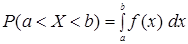
Исбот. (7.4) формулага асосан
бўлади. –НьютонЛейбниц формуласига асосан эса
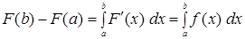
муносабат ўринли бўлади.
Шундай килиб,
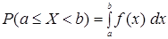
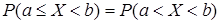
ни хосил киламиз.
3-мисол. Х тасодифий микдорнинг зичлик функцияси берилган:
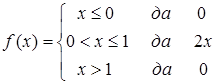
Тажриба натижасида Х
тасодифий
микдор 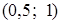
Ечиш. (7.7) формулага асосан изланаётган эхтимоллик
га тенг.
 зичлик функциясини билган холда таксимот функциясини
зичлик функциясини билган холда таксимот функциясини
(7.8)
4-мисол. Берилган зичлик функцияси бўйича таксимот функцияси топилсин:
 .
.
Топилган функциянинг графиги ясалсин.
Ечиш. (7.8) формуладан фойдаланамиз. Агар бўлса, у холда , демак, . Агар бўлса, у холда , демак,
.
Агар бўлса, у холда
.
Демак, изланаётган таксимот функцияси куйидаги кўринишга эга
 .
.
Бу функциянинг графиги 7.3 расмда тасвирланган.
| |||||
7.3 - расм.
Зичлик функциясининг иккита хоссасини келтирамиз.
4-хосса. Зичлик функцияси — номанфий функция:
(7.9)
5-хосса. Зичлик функциясидан дан гача олинган хосмас интеграл бирга тенг:
(7.10)
Назорат учун саволлар:
1. Нима учун ихтиёрий типдаги тасодифий микдорларни бериш мумкин бўладиган умумий усулни киритиш максадга мувофик?
2. Тасодифий микдорнинг таксимот функцияси деб нимага айтилади?
3. Таксимот функциясининг 1-хоссаси (1-хосса) хакида нима биласиз?
4. Таксимот функциясининг 2-хоссаси хамда унинг натижалари (2-хосса, 1- ва 2-натижалар) хакида нима биласиз?
5. Таксимот функциясининг 3-хоссаси хамда унинг натижаси (3-хосса ва 3-натижа) хакида нима биласиз?
6. Узлуксиз ва дискрет тасодифий микдорлар таксимот функцияларининг графиклари кандай хоссаларга эга?
7. Узлуксиз тасодифий микдорнинг зичлик функцияси деб нимага айтилади ва 1-теорема хакида нима биласиз?
8. Зичлик функциясини билган холда таксимот функциясини кандай топиш мумкин ва зичлик функциясининг хоссалари хакида нима биласиз (4- ва 5-хоссалар)?